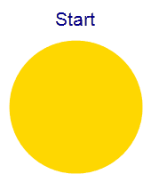

Jeff eats a pie in an unusual way.
The pie is circular. He starts with slicing an initial cut in the pie along a radius.
While there is at least a given fraction $F$ of pie left, he performs the following procedure:
- He makes two slices from the pie centre to any point of what is remaining of the pie border, any point on the remaining pie border equally likely. This will divide the remaining pie into three pieces.
- Going counterclockwise from the initial cut, he takes the first two pie pieces and eats them.
When less than a fraction $F$ of pie remains, he does not repeat this procedure. Instead, he eats all of the remaining pie.

For $x \ge 1$, let $E(x)$ be the expected number of times Jeff repeats the procedure above with $F = 1/x$.
It can be verified that $E(1) = 1$, $E(2) \approx 1.2676536759$, and $E(7.5) \approx 2.1215732071$.
Find $E(40)$ rounded to $10$ decimal places behind the decimal point.
solve(x=1) → █solve(x=40) → █solve(x=7.5) → █Solution pending... the mathematician is still thinking.
Nothing here yet - come back when the dust has settled.